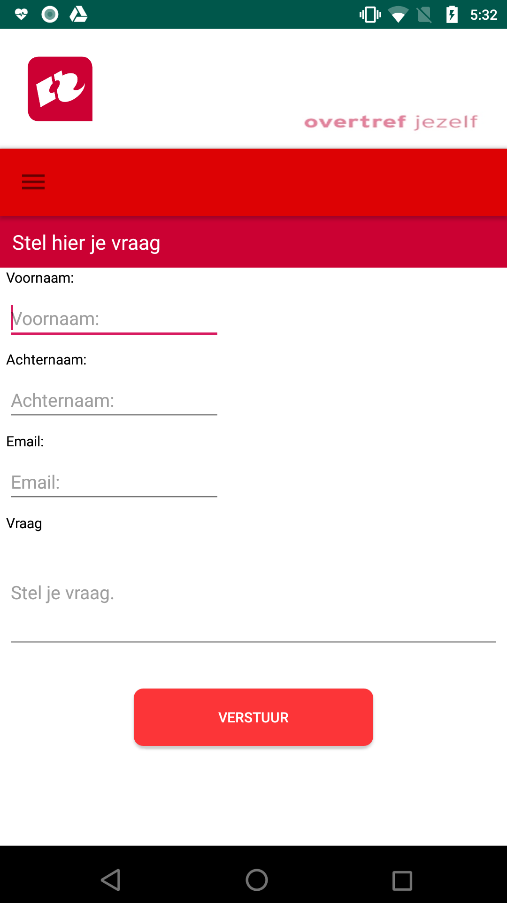
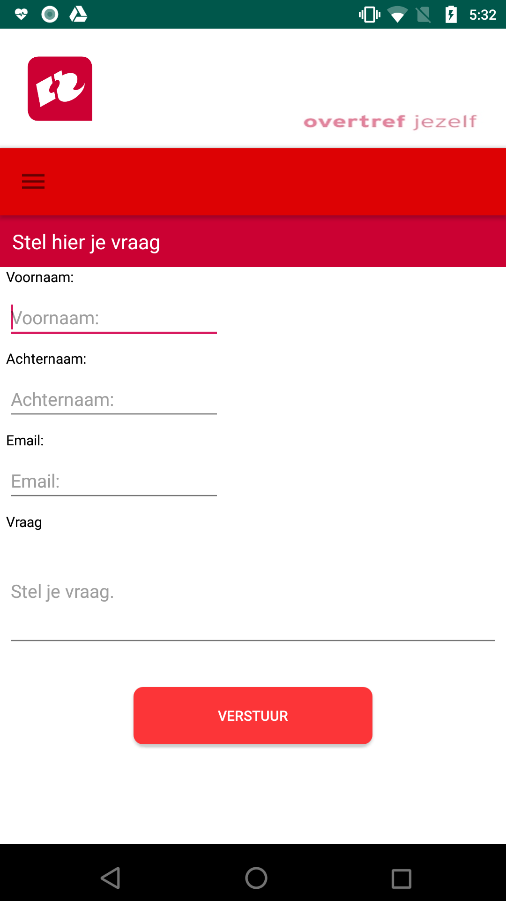

Nasa Rover Application (Java)
Dit is mijn eerste applicatie geweest die ik in 2018 heb gemaakt. Hier heb ik gebruik gemaakt van Android Studio, waar ik een API aanroep van NASA. Deze API bevatte informatie over de Mars Rover en de foto's. Hier heb ik een selectie gemaakt van 5 camera's en de foto's laten ophalen met de Image ID en de camera naam.
Bioscoop applicatie (Java)
Mijn tweede applicatie is een bioscoop applicatie geweest, waarbij we in teamverband moesten werken. Dit project was het doel om te leren omgaan met het scrum methodiek. Dit project werd er veel aandacht besteedt aan documentatie, omgaan met Github, code opsplitsen en omgaan met een database. Het waren elementen die een verband met elkaar hadden, wat wij moesten leren te gebruiken.
 <
<
Hogeschool Rotterdam Opendagen (Java)
Dit project werd ook gekeken naar de uitvoering van de scrum methodiek. Dit project hebben we veel kennis gemaakt met formulieren, database, mail koppeling en de opmaak van de applicatie zelf.
Ordersysteem @Mama's (PHP/Javascript/SQL)
Voor deze applicatie is er gekozen om een webapplicatie te maken wat beschikbaar is voor de desktop maar ook mobiele apparaten. Omdat het een lunchroom is, was het idee om een aantal processen te digitaliseren. Hierdoor komen de bestellingen sneller aan bij de keuken en kan de serveerster sneller door naar de volgende klant.